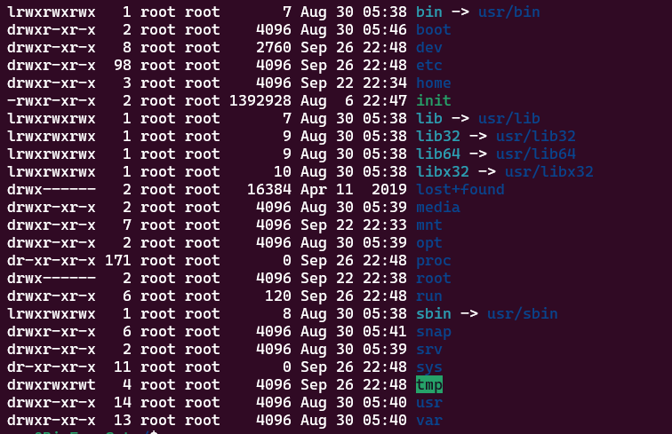

Linux Cheat Book
目录管理
cd 切换目录
./ 当前目录
cd .. 切换至上一级目录
ls 列出目录
ls -a 查看全部文件，包含隐藏文件
ls -l 列出所有文件，包含文件的属性和权限，不包含隐藏文件
pwd 显示当前路径
mkdir 创建目录
mkdir -p test1/test2/test3 递归创建文件夹
rmdir 删除空目录
rmdir -p test1/test2/test3 递归删除多个目录
cp 复制文件或者目录
cp install.sh test1 拷贝install.sh 到test1文件夹
rm 移除文件或者目录
rm -f 忽略不存在的文件，不会出现警告， 强制删除
rm -r 递归删除目录
rm -i 询问是否删除
rm -rf / 删除系统中的所有文件 （极其危险）
mv 移动文件或者目录
mv -f 强制移动
mv -u 只替换已经更新过的文件
mv 也可以作为重命名的命令
mv 源文件名 新文件名
文件属性

如图所示，左侧第一列为文件属性
在Linux中第一个字符代表整个文件是目录、文件或者链接文件等
- 当为
[ d ]则是目录 - 当为
[ - ]则是文件 - 当为
[ l ]则表示为链接文档（link file） - 当为
[ b ]则表示为装置文件里面的可供储存的接口设备（可随机存储装置） - 当为
[ c ]则表示为装置文件里面的串行端口设备，例如键盘、鼠标（一次性读取装置）
接下来的字符中，以三个为一组，且均为 rwx 的三个参数的组合
其中，r代表可读(read), w代表可写(write), x代表可执行(execute)
要注意的是，这三个权限的位置不会改变，如果没有权限，就会出现-占位
每个文件的属性由左边第一部分的十个字符来确定（如下图）:

从左至右用0-9这些数字来表示
第0位确定文件类型，第1-3位确定属主（该文件的所有者）拥有该文件的权限。第4-6位确定属组（所有者的同组用户）拥有该文件的权限，第7-9位确定其他用户拥有该文件的权限。
其中：
第1、4、7位表示读权限，如果用"r"字符表示， 则有读权限，如果用"-“字符表示，则没有读权限;
第2、5、8位表示写权限，如果用"w"字符表示，则有写权限，如果用”-“字符表示没有写权限;
第3、6、9位表示可执行权限，如果用"x"字符表示，则有执行权限，如果用”-“字符表示，则没有执行权限。
对于文件来说，它都有一个特定的所有者，也就是对该文件具有所有权的用户。
同时，在Linux系统中，用户是按组分类的，一个用户属于一个或多个组。
文件所有者以外的用户又可以分为文件所有者的同组用户和其他用户。
因此，Linux系统按文件所有者、文件所有者同组用户和其他用户来规定了不同的文件访问权限。
在以上实例中，boot文件是一个目录文件，属主和属组都为root。
第二列为文件的个数，第三列是属主，第四列是属组的用户组,第五列是文件的大小，第六列是时间
修改文件属性
- chgrp: 更改文件属组
chgrp [-R] 属主名 文件名
-R : 递归更改文件属组，就是在更改某个目录文件的属组时，如果加上-R参数，那么该目录下的所有文件的属组都会改变
- chwon: 更改文件属主，也可以同时更改文件属组
chown [-R] 属主名 文件名
chown [-R] 属主名: 属主名 文件名
- chmod: 更改文件的9个属性
chmod [-R] xyz 文件或者目录
Linux文件属性有两种设置方法，一种是数字，一种是符号。 Linux文件的基本权限就有九个，分别是owner/group/others三种身份各自的read/write/execute权限
文件权限字符为： 【-rwxrwxrwx】 ，这九个权限三个三个为一组，我们可以使用数字来代表各个权限
r:4 w:2 x:1
每种身份（owner/group/others）各自的三个权限（r/w/x）分数是需要累加的
例如：
chmod 755 filename
文件内容查看
Linux系统中使用以下命令来查看文件的内容：
- cat 由第一行开始显示文件内容
- tac 由最后一行开始显示文件内容（cat 命令倒着写）
- nl 显示的时候，顺道输出行号
- more 一页一页的显示文件内容
- less less与more类似，但是比more更好的是，他可以往前翻页(/字符串 : 向下查询， ?字符串 : 向上查询 n表示下一个匹配项 N表示上一个匹配项)
- head 只看头几行 -n 表示查看几行
- tail 只看最后几行 -n 表示查看几行
可以使用 man [命令] 来查看哥哥命令对应的文档， 如：man cp
账号管理
- 用户账号的添加，删除与修改
- 用户口令的管理
- 用户组的管理
- 用户账号的管理
useradd 命令 添加用户
useradd -选项 用户名
-m: 自动创建这个用户名的主目录 /home/xxx
-G: 给用户分配组
Linux中一切皆文件，这里的创建用户其实就是在某一个文件中写入了用户信息（/etc/passwd）
userdel 命令 删除用户
userdel -选项 用户名
-r: 会同时删除用户的目录文件
usermod 命令 修改用户
usermod -选项 用户名
# 例如 usermod -d /home/new-home user1 将user1的家目录指向改为/home/new-home
-d: 修改用户所指向的家目录（需要提前创建好，这里的修改只会在/etc/passwd文件中修改指向）
切换用户
- 切换用户的命令: su username
- 从普通用户切到root用户， 可以使用： sudo su
- 在终端输入exit或者logout或使用快捷方式ctrl+d,可以退回到原来的用户，ctrl+d就是执行exit命令
- 在切换用户时，如果想用新的用户的工作环境，可以在su和username之间加
-, 例如： su - user1$表示普通用户#表示超级用户，也就是root用户
更改主机名
hostname newHostName （临时的，重启电脑就没了）
用户密码设置
# 为user用户设置密码(如果是超级用户)
passwd user
# 普通用户为自己修改密码
passwd
锁定用户
# 锁定 usr1 账号，usr1就不能登录了
passwd -l usr1
# 删除use1的密码
passwd -D use1
# 解锁 usr1
passwd -u usr1
用户组的管理本质上就是对/etc/group文件的更新
创建用户组
grougadd 选项 groupname
-g: 可以指定group-id
删除用户组
groupdel groupname
修改用户组
groupmod 选项 groupname
-g: 可以跟新的group-id
-n: 可以修改groupname
/etc/passwd 的文件格式
用户名:口令(登录密码，不可见):用户标识号:组标识号:注释性描述:组目录:登录shell
磁盘管理
df (列出文件系统的整体的磁盘使用量)
df -h
dh (检查磁盘空间的使用量)
# 检查根目录下每个目录所占的容量
du -sm /*
进程管理
ps 命令
用于查看当前系统中正在执行的各种进程信息
ps 选项
-h: 查看帮助手册
-A: 显示当前终端运行的所有进程信息
-u: 以用户的信息显示进程
-x: 显示后台运行进程的参数
# 查看所有进程
ps -aux
# 查看mysql进程
ps -aux | grep mysql
# 查看父进程的信息
ps -ef
# 以树的形式查看进程jh
pstree
-p: 显示父进程
-u: 显示用户组
pstree -pu
# 结束进程(强制执行)
kill -9 pid
# 结束进程（由程序自主决定）
kill -15 pid